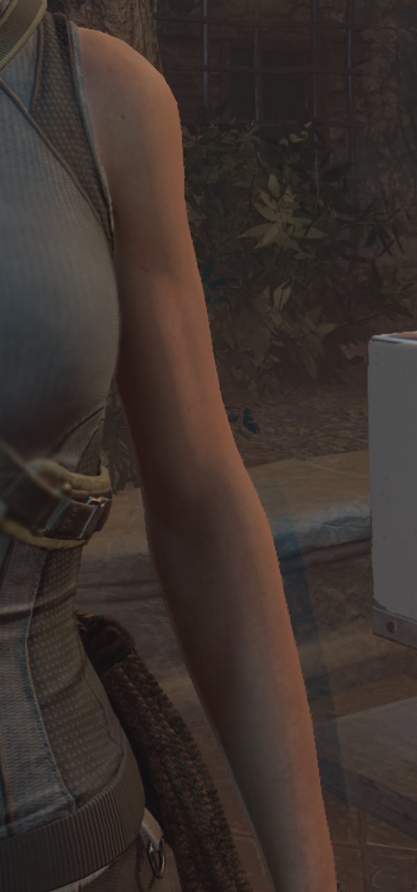

DLSS 5 neural rendering on an AMD GPU: reusing the network every 4th frame, as found vs ours
DLSS 5 neural rendering (small model) on an RX 7800 XT, Linux/Proton. The network is too slow to run on every frame here, so it runs every 4th frame and its result is reused in between, before the upscaler (FSR 4.1.2 Lite, our 4.1.2l-lossy build).
The community plugin, as found, runs the whole network on one frame in four: a long frame every 4th frame, which stutters once a game is heavy. Ours spreads the network over all four frames so every frame costs about the same, times it to the upscaler's own skipped frames, and cleans up the reused result where it no longer fits: at screen edges, around moving characters, at scene cuts, and (in Stellar Blade) by re-fitting it to the current frame's edges. The main gain is pacing; the picture gains are fewer ghosts and dark trails. All fps figures are rough estimates.
Slider: move the mouse to slide, click to lock, wheel to zoom, drag to pan, double-click to fit. Pick which picture is on each side in the menus.
Stellar Blade demo, frame 59
Stellar Blade demo, frame 59: Eve leaving the escape pod (full frame). Output 4K, FSR Quality (render 2561x1441).
As found leaves dark trails behind the flying particles and dark spots on Eve; ours removes nearly all of them (pixels more than 25 levels darker than an every-frame run: 2,949 vs 80 on this frame). Ours also spreads the network over all four frames instead of one long frame every 4th frame.
What got worse: Ours is slightly brighter than the every-frame reference over a wider area, so by overall dB as found measures slightly closer (frame 59: 37.54 vs 36.88 dB; frames 1-62: 40.43 vs 39.03 dB): ours carries an older edit on part of each frame.
Estimates for the setting played in the game (4K output, 1920x1080 render). Ours was measured there holding the 60 fps cap, with neural rendering at 4.2 ms per frame on average and 4.7 ms at most. The game's own frame time was not measured (assumed about 11 ms). As found: the whole network (about 17 ms at that size, estimated from measured sizes) on one frame in four, about 0.5 ms on the others.
Shadow of the Tomb Raider, right arm, frames 36-41

Shadow of the Tomb Raider, a captured clip (slow pan, Lara walking), frames 36-41, her right arm (crop, plays). Output 4K, FSR Balanced (render 2258x1270).
As found leaves a translucent blue-gray band where the arm was a few frames earlier; it builds up over frames 37-39 and is gone on frame 40, when as found runs the network again. Ours mostly removes it (a faint trace stays) and changes more evenly from frame to frame.
What got worse: Ours is better on frame 39 but somewhat worse on the frames right after as found's network run (more pixels far from the reference on 36-38 and 40-41); over frames 36-43 as found measures slightly closer in this crop (37.10 vs 36.69 dB), on the whole clip 38.91 vs 38.53 dB. The split carries an older edit, which costs most in fast pans.
Estimates: game + upscaler measured at 8.2 ms per frame without neural rendering; as found adds 22.9 ms on one frame in four and 0.7 ms on the others, ours 6.5 ms on every frame (both measured in the test harness at this size). Ours measured in the game's benchmark: 75 fps average, 68 minimum (one run).
Shadow of the Tomb Raider, both arms, frame 39
Shadow of the Tomb Raider, a captured clip, frame 39, both arms (crop). Output 4K, FSR Balanced (render 2258x1270).
Frame 39 is as found's oldest reused frame. Look beside both arms: a blue-gray band on the right, a dark copy beside the waist on the left; ours mostly removes both (left-arm crop: 32.40 vs 33.22 dB, ours closer).
What got worse: Whole frame 39 about equal (37.97 vs 38.03 dB); on the whole clip as found is slightly closer (38.91 vs 38.53 dB).
Estimates: game + upscaler measured at 8.2 ms per frame without neural rendering; as found adds 22.9 ms on one frame in four and 0.7 ms on the others, ours 6.5 ms on every frame (both measured in the test harness at this size). Ours measured in the game's benchmark: 75 fps average, 68 minimum (one run).